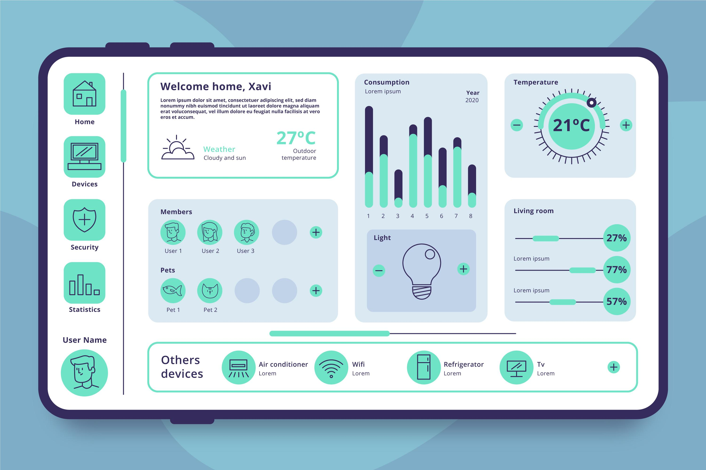

The intelligence behind every smart farm.
Krishivolt brings together AI, IoT, and connected systems to make farming data actionable, efficient, and future-ready.
Discover the Stack
Technology
A connected ecosystem for precision agriculture
Each layer of the technology stack is designed to support better insight, faster response, and more resilient farm operations.
Artificial Intelligence
Predictive models help farmers understand crop behavior, weather impact, and field performance.
IoT Sensors
Soil, water, and environmental sensors provide continuous field visibility in real time.
Satellite Imaging
High-resolution imagery supports field mapping, crop health analysis, and early issue detection.

Why it matters
Turning farm data into action
Krishivolt helps farms shift from manual monitoring to intelligent operations with cleaner decisions and better visibility.
Real-time insight
Instant access to field conditions and performance metrics.
Faster response
Spot issues early and act before they affect productivity.
Scalable operations
Designed to grow with farms of different size and complexity.